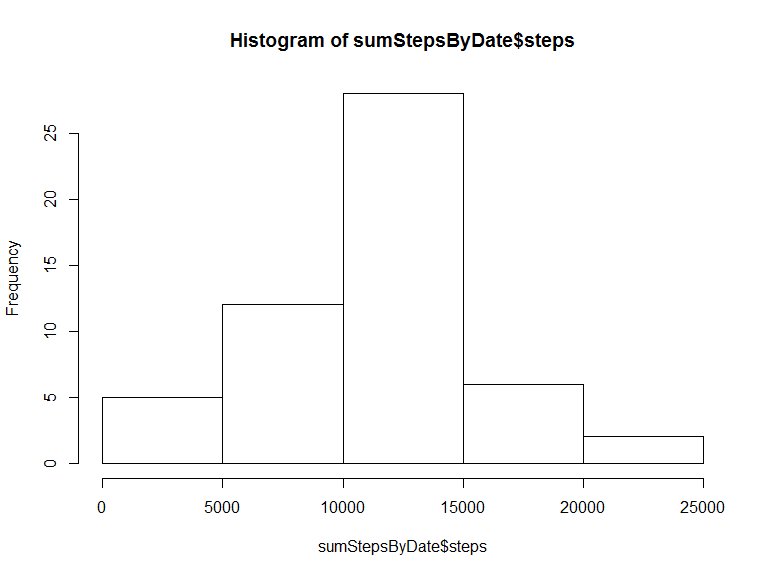
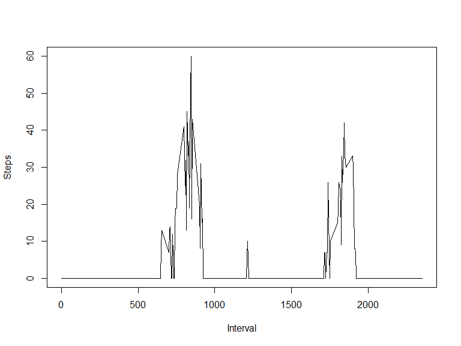
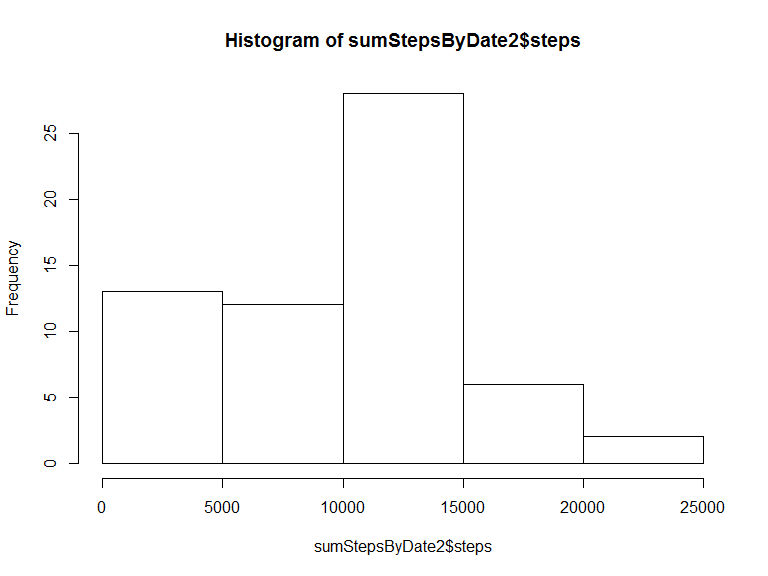

Reproducible Research: Peer Assessment 1
library(ggplot2)
library(knitr)## Warning: package 'knitr' was built under R version 3.1.3#opts_chunk$set(fig.path='figures/')Loading and preprocessing the data
d<-read.csv(file = "activity.csv")Histogram of the total number of steps taken each day
sumStepsByDate<-aggregate(d$steps, by = list(d$date), FUN = sum)
names(sumStepsByDate)<-c("date", "steps")
hist(sumStepsByDate$steps)
## Mean and median number of steps taken each day
mean(sumStepsByDate$steps, na.rm = TRUE)## [1] 10766.19median(sumStepsByDate$steps, na.rm = TRUE)## [1] 10765What is the average daily activity pattern?
x<-aggregate(d$steps, by = list(d$interval), FUN = median, na.rm=TRUE)
names(x)<-c("interval", "steps")
with(x, plot(x$interval, x$steps, type = 'n', ylab = 'Steps', xlab='Interval'))
with(x, lines(x$interval, x$steps, col='black'))
## Imputing missing values
Number of missing values
NROW(which(is.na(d$steps)))## [1] 2304Replace NA values with median steps in the interval over all days without NA values
medianStepsByInterval<-aggregate(d$steps, by = list(d$interval), FUN = median, na.rm=TRUE)
names(medianStepsByInterval)<-c("interval", "steps")
d2<-d
ids<-which(is.na(d2$steps))
for(i in ids) {
interval<-d[i,]$interval
steps<-medianStepsByInterval[which(medianStepsByInterval$interval==interval),]$steps
d2[i,]$steps<-steps
}Histogram of the total number of steps taken each day
sumStepsByDate2<-aggregate(d2$steps, by = list(d2$date), FUN = sum)
names(sumStepsByDate2)<-c("date", "steps")
hist(sumStepsByDate2$steps)
Especially the values from range 0-5000 on the x-axis are much higher than in the first histogram
Mean and median number of steps taken each day
mean(sumStepsByDate2$steps)## [1] 9503.869median(sumStepsByDate2$steps)## [1] 10395Both the mean and median value are lower compared to the first measurement.
Are there differences in activity patterns between weekdays and weekends?
daytype<-factor(c("weekday","weekend"))
d2$daytype<-ifelse(strftime(d2$date,'%u')>5,"weekend","weekday")
d2ax<-aggregate(d2$steps, by = list(d2$interval,d2$daytype), FUN = median)
names(d2ax)<-c("interval", "daytype", "steps")
d2a<-d2ax[which(d2ax$daytype=="weekday"),]
qplot(interval, steps, color=daytype, data=d2a, geom=c("line"), ylab = '', main = '')
d2a<-d2ax[which(d2ax$daytype=="weekend"),]
qplot(interval, steps, color=daytype, data=d2a, geom=c("line"), ylab = '', main = '')
From the graphs it can be concluded, that on the weekend in about the interval 900 to 1600 a much higher step amount can be seen.